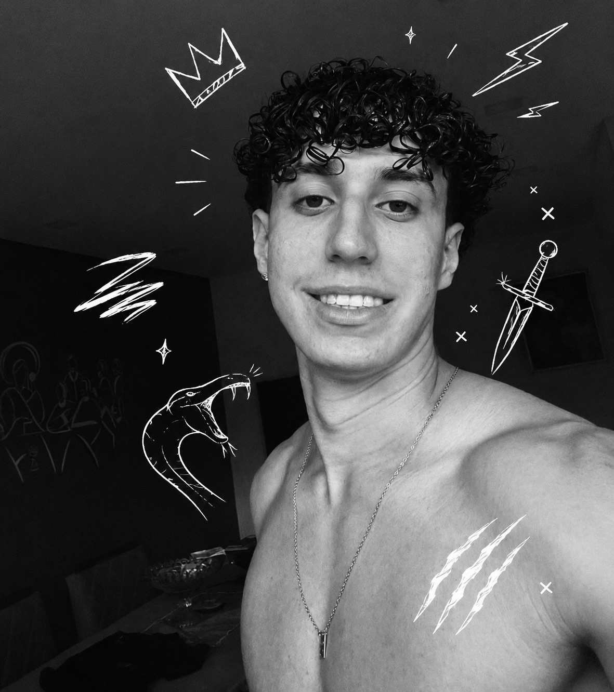

Sobre mim
Olá! Me chamo Gustavo Lacerda, tenho 18 anos e sou natural de Guarapari, ES. Desde cedo, a tecnologia sempre fez parte da minha vida, eu sempre fui o "garoto da tecnologia" da família, aquele que resolvia os problemas do computador de todo mundo e ficava curioso sobre como as coisas funcionavam por trás da tela. Essa curiosidade me trouxe até aqui. Em 2026, dei o primeiro passo oficial dessa jornada ao ingressar no curso de Análise e Desenvolvimento de Sistemas (ADS), com o objetivo claro de me tornar um Desenvolvedor de Software e construir soluções que façam a diferença na vida das pessoas.
Atualmente estou com foco no desenvolvimento back-end, me aprofundando em C#, TypeScript e SQL, tecnologias que acredito serem fundamentais para construir sistemas robustos e escaláveis. Mas minha jornada não começou por aí: já explorei Python, Dart, Flutter, HTML5 e CSS3, o que me deu uma visão ampla do universo do desenvolvimento e me ajudou a entender como as peças se encaixam. Acredito muito em aprender fazendo. Por isso, cada tecnologia que estudo gosto bastante de praticar, pois código que não é aplicado é conhecimento pela metade. Estou em constante evolução, um commit por vez, construindo o portfólio e a base técnica que me levarão à minha primeira oportunidade profissional como desenvolvedor.
